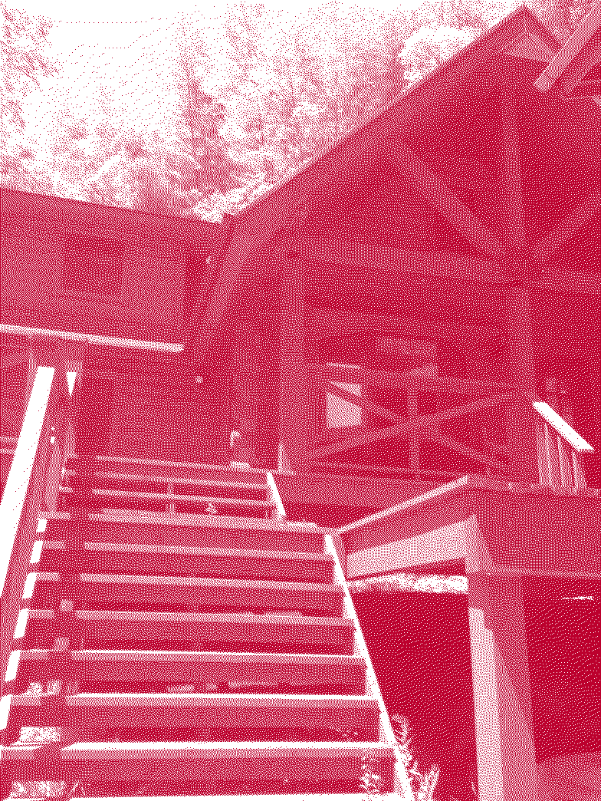

Home / Arriving-In-Japan
We arrived in Japan, ready to begin building. We flew into Tokyo airport and I had a VERY heavy bag (duffle bag curiodsy of Lexi bc we temporarily swapped bags months prior).
We took a train from Tokyo to Ogawa Machi, Saitama where we would then call home. We made it to the cabin after a long adventure through many trains. The cabin is beautiful! We were able to get it for a very cheap price ($300 / month per person).

We moved to this cabin in Japan for a few reasons:
- We wanted to go somewhere where we would be totally isolated so we could focus on building something awesome every day
- We wanted to get inspiration from a part of the world where most startup founders don't go (rural Japan)
- We wanted to save money for a couple months while we get our idea off the grown before moving to California
- great adventure!
Japan met our expectation in all of those areas. We spent most days coding in Starbucks near the Shinrinkōen Station (about a hour away from our cabin by train). I was surprised by both the kindness of the Japanese people and by the fact that very few speak English. Neither of those things should have surprised me, but shows how little I knew about Japan before embarking on this adventure!
For anyone who is looking to save more funds and to be somewhere where they will be less isolated (due to language barrier), I recommend looking more into India & Thailand. That being said, Japan fit the criteria we were looking for perfectly.
Deciding What To Build →